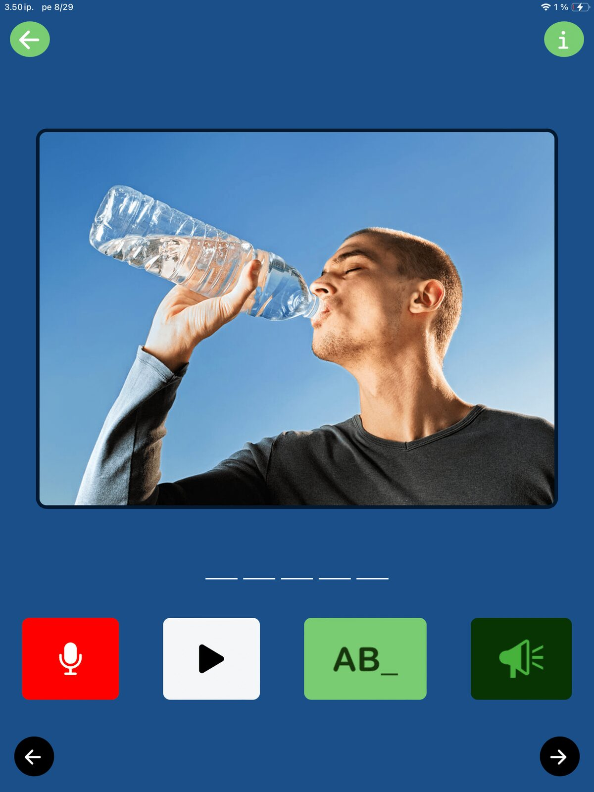
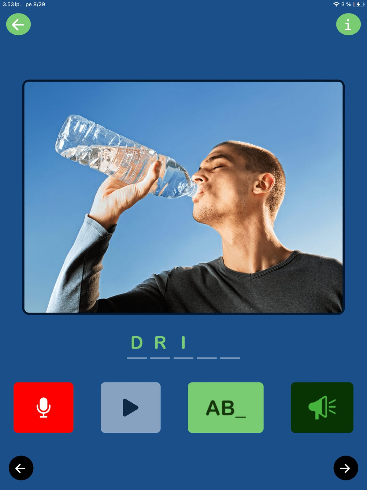

Let’s turn our attention to Sanapsis+ for a moment. This is the app designed for patients to practice their language skills independently.
The Breaking News: Sanapsis+ has been improved, thanks to our wonderful users!
The latest updates are now live in both the App Store and Google Play. This release includes general stability improvements, and more importantly: no more overlapping audio if you tap the image rapidly multiple times, and no more freezing for the recording function on the Naming exercise!
Spotlight on the Naming Exercise
I will take a quick moment to walk you through the Naming exercise here, as many of you might have experienced some frustration using it lately.
Today I selected Verbs as my category. It is a hot day today, so showcasing the verb DRINK felt appropriate. That water looks mighty refreshing!

The goal is straightforward: Name the word the image represents and say it out loud. In my example, I would aim to say “drink.”
1. Record your response.
- Tap the red microphone button to start recording (it will display “recording”).
- Speak at your own pace; the feature is intentionally slow to give you plenty of time.

- The recording stops automatically and the Play button turns white
2. Listen to your voice
- Tap the Play button to listen to the recording of your voice.
You can record the word and listen to the recording as many times as you like.

Need a little support?
If you need a little boost, you have several options:
- Tap the big image to hear the word.
- The green button with letters spells out the word letter by letter.
- The green speaker button plays a phonetic clue (like “dr...”) to get you started.
Note that there is no feedback on how you did. Sanapsis+ is a tool for you to evaluate and improve your spontaneous speech – not just talk to get a “green light” from a device. This is a good tool to take a moment and reflect. What did that sound like? How can I improve? And if that was perfect, how will I celebrate the success?
Thank You, Users!
We are so grateful for everyone who reports bugs, shares feedback, or simply lets us know they are using the app. We love to reach out and ask: How can we improve your experience?
We are here for you and because of you. Every update is designed to support your rehabilitation journey. Thank you for supporting us in this mission!